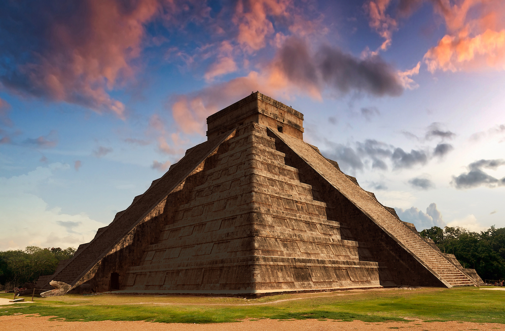

Es simplemente increíble como algunas estructuras persisten a través de los tiempos y nos siguen impactando al momento de observarlas y estudiarlas, a veces parece hasta inexplicable su manera de haberse construido, por ello te mostramos algunos de las estructuras arquitectónicas más impresionantes que se encuentran en el mundo.
1. Partenon
El Partenón es un templo consagrado a la protectora de Atenas, Atenea Pártenos, y uno de los principales templos dóricos octóstilos, algo poco frecuente, de mármol blanco del Pentélico y cubierto con tejas de mármol de Paros, que se conservan. Fue construido entre los años 447 a. C. y 432 a.

2. Ciudad prohibida
La Ciudad Prohibida es un complejo palaciego situado en Pekín, capital de China. Durante casi quinientos años, desde la dinastía Ming hasta el final de la dinastía Qing, fue la residencia oficial de los emperadores de China y su corte, así como centro ceremonial y político del Gobierno chino.

3. Pirámides de Egipto
Las pirámides de Egipto son, de todos los vestigios legados por los egipcios de la antigüedad, los más portentosos y emblemáticos reconocidos. Construidas como criptas reales para los faraones desde el año 2700 a.C, con bloques de piedra revestidos de caliza.

4. Chichen Itzá
Chichén Itzá es un complejo de ruinas mayas famoso a nivel mundial en la península de Yucatán de México. Una enorme pirámide escalonada, conocida como El Castillo, domina los 6.5 km cuadrados de la ciudad antigua, que prosperó desde aproximadamente el año 600 d.C. hasta el siglo XIII.
5. Abadía de Westminster
La Abadía de Westminster o Iglesia colegiata de San Pedro de Westminster fue una iglesia gótica del tamaño de una catedral. Fue el lugar tradicional para las coronaciones y entierros de los monarcas ingleses. Estuvo localizada en Londres, al lado del Palacio de Westminster. De acuerdo con la tradición, en el año 616 se fundó un santuario en el lugar conocido como "Thorney Island".